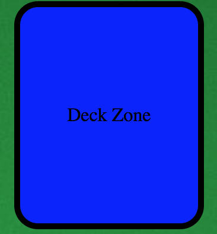
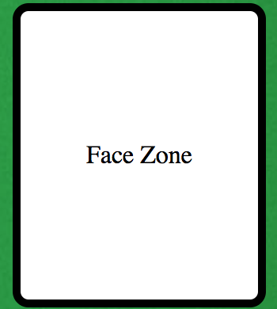
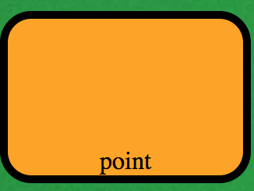
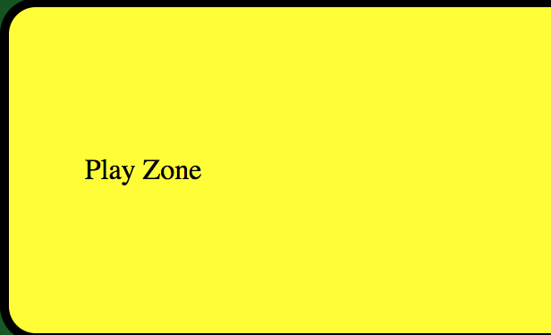
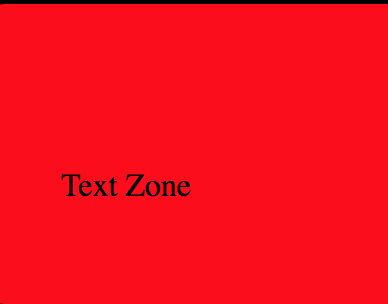
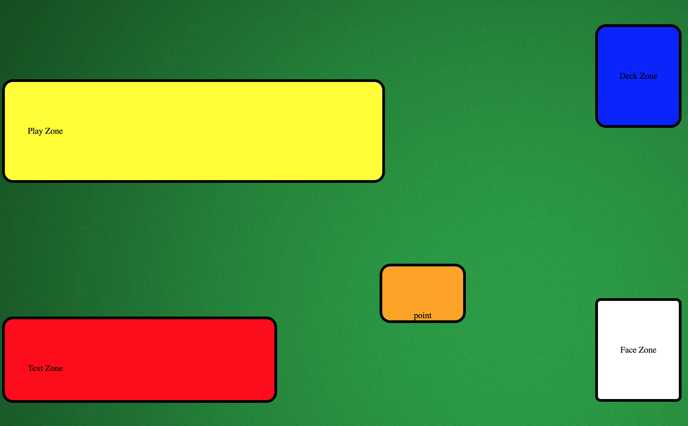

The layout for the Game of 30 is simplistic to undertand. There are 5 main zones within the game. Each zone in the game has one basic function. Below, are an explaination of each zone and their functions.
 The first zone is called the Deck Zone. As the name suggest, this is the zone in which the entire deck is placed. All card effects related to drawing, returning , and discarding cards will take place within this zone. This zone is highlighted in blue. The Deck Zone is located in the upper righthand side of the board.
 Directly below the Deck Zone is the Face Zone. This is the part of the board wherein all face cards are placed. Face cards constitutes of King, Queen, Jack, and Joker. Each of these cards will activate their effects within this zonal area. However, any animation regarding the deck will occur in the Deck Zone. This zone is highlighted in white.
 Directly to the left of the Deck Zone and Face Zone is the Point Zone.This zone will keep a track of all accumulation and losses of points during the duration of the game. The zone is highlighted in orange.Any effects regarding the accumulation and loss of points will be shown here. If a King is drawn, this zone will glow in blue signalling that the player will have immunity to Joker for one turn. If a Joker is drawn, this zone will glow red, and any accumulated points will turn into zero, signalling the loss the of the game. However, if a King was drawn the previous turn, the zone will remain normal, and the loss off the player points will not occur.
 On the left side of the board, there are only two zones. The first of these zones is the Play Zone. The Play Zone is capable of holding 11 cards at maximum. All numerical cards from 1-9 will be played within this zone. Face Cards will not be placed here, but will be placed in the Face Zone. The only cards that have effects that can be placed are the Ace and Joker. This field is highlighted in yellow.
 The second zone on the left and the last zone of this board is the Text Zone. This zone is located directly below the Play Zone. In this zone, all of the cards that are drawn would have their values displayed here. For example, if 9 of clubs were to be drawn, the player would see "The 9 of Clubs has has been drawn. You have gained 9 points!". This zone is highlighted in red.
Below is the entire board of 30. 